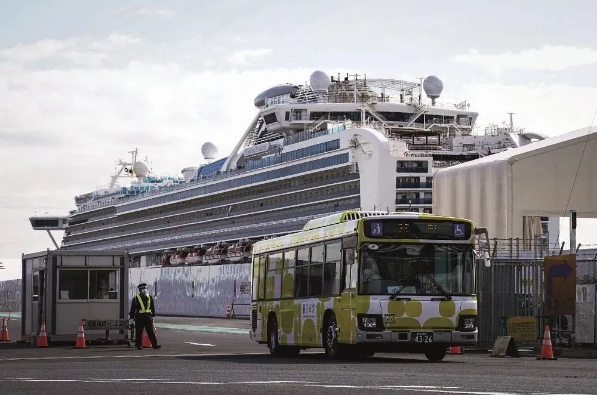

口述实录 | 我在武汉方舱医院14天，有了一种胜利在望的感觉
原文链接 备份链接 从2月7日到现在，一方面大家的活动越来越丰富，另一方面由于轻症患者比较多，人们病情都慢慢恢复。所以，我看到每个人脸上的笑容都变多了。 口述 | 余 毅 整理 | 王仲昀 这一个月终于要过去了。 2月21日上午，在等待几 …
以下文章来源于财经十一人 ，作者杨立赟
[
财经十一人
由《财经》杂志公司产业报道团队创建，研讨企业成败，探究行业兴衰，推动阳光商业](#)

从钻石公主号开始，邮轮就被认为是疫情下的“魔鬼”，现在它想证明自己也可以是“天使”

文 |《财经》记者 杨立赟
编辑 | 余乐
进入三月以来，新冠肺炎疫情在全球蔓延。为了避免“钻石公主号”聚集性疫情的重演，全球各大邮轮公司均陆续宣布了停航计划。然而，时至今日，仍有少数几艘满载乘客的邮轮漂泊在大洋上，其中数艘面临着没有国家接收的窘境，时刻存在着疫情爆发的风险。另一方面，一些已经靠岸停航的邮轮经改造后变成了临时的方舱医院，为缓解医疗资源的紧张局面贡献着力量。
MSC地中海航运集团决定将邮轮改造成“海上方舱”，提供给已进入紧急状态的意大利利古里亚大区，收治新冠肺炎患者。全球最大的邮轮公司嘉年华公司、美国海军则拿出多艘邮轮、军舰，临时收治非新冠肺炎患者，为陆地上的医院释放空间。
自2月1日全球首个邮轮乘客被确诊为新冠肺炎后，邮轮便成为漂浮在海上的疫情炸弹，多艘邮轮无法靠岸，被称为“恐怖邮轮”，全球邮轮大范围停航。在业务停摆的情况下支援抗疫，或是邮轮公司扭转公众的负面印象、积攒商誉的办法。然而在改造成方舱医院时，邮轮如何保证通风系统等硬件符合收治病患的标准，仍是一个挑战。
仍有船只前途未卜
国际邮轮市场的重心在欧美。三月以后，随着这些地区的疫情迅速升级，邮轮公司相继停运，全球邮轮业接近完全停摆。
国际邮轮协会（CLIA）3月13日宣布，将在未来30天暂停运营以美国为停靠港的邮轮。同日，嘉年华邮轮宣布，即刻起暂停其在北美的船队运营，目前在海上的所有船只将继续其航行，并按计划返回其母港。同属嘉年华集团的公主邮轮也宣布暂停旗下全球18艘邮轮两个月的运营。
维京游轮将在全球范围内暂停运营，旗下70多艘内河游轮和6艘远洋邮轮将全部停止运营，5月1日复航。欧洲最大的邮轮公司意大利歌诗达邮轮将在4月3日前暂停全球范围所有航线的运营。MSC地中海邮轮所有尚未出发的美国航线将暂停运营，此前已经暂停了地中海、中东和亚洲区域的邮轮业务。皇家加勒比邮轮公司、诺唯真邮轮等亦宣布了不同时间长度的停航。
国际邮轮公司的“至暗时刻”也反映在资本市场。据智通财经网统计，2月中旬至3月16日，皇家加勒比邮轮(RCL.US)股价跌幅超70%，创近6年以来新低;嘉年华邮轮(CCL.US)股价跌近65%，创近10年以来新低;诺唯真邮轮(NCLH.US)股价跌超76%，创下历史新低。
目前，全球各地仍然有数艘载有乘客的邮轮无法靠岸，其中有两艘已发现确诊病例。
皇家加勒比邮轮公司旗下银海邮轮的“银色幻影”号正停靠在巴西累西腓港，并面临着成为“钻石公主号”的风险。3月14日，该邮轮上有一名乘客确诊感染新冠病毒。这名患者已被接下船，但剩余的数百名乘客和船员仍在船上隔离。
另一艘银海邮轮“银色探险者号”情况类似，也有一名乘客被确诊，目前停靠在智利的卡斯特罗港。
诺唯真邮轮公司的“诺唯真珠宝”号虽然没有确诊病例，但仍漂浮在太平洋中。这艘船在澳大利亚和法属波利尼西亚航线上进行为期23天的航行，原定于3月20日在新西兰奥克兰下船，但辗转南太平洋地区多个港口均被拒绝停靠。该船目前计划在3月22日于夏威夷瓦胡岛的檀香山港靠岸，但当地政府已表示，将只允许夏威夷本地居民下船。
同样临时改道去檀香山靠岸的还有荷美邮轮的马斯丹（Maasdam）邮轮。该邮轮原本计划在夏威夷大岛停靠，但该岛已关闭邮轮服务。此前在3月16日，它已经被智利拒绝靠岸，船上并没有出现新冠肺炎疑似病例或确诊病例。
而正在进行环球航行的阿姆斯特丹号邮轮，撑不到原定的5月12日航行终点，将在3月21日在澳大利亚弗里曼特尔下船。
国际邮轮的船主、乘客、船员往往来自全球各地，为各国厘清责任主体带来挑战，考验着国际协作的能力和意愿。面对着频频出现的“拒绝停靠”问题，各方态度不一。
美国旅行代理商协会（ASTA）CEO Zane Kerby批评港口拒绝邮轮靠岸。他在一份声明中说：“在过去的几周中，出现了令人不安的反人道主义趋势。尽管地方政府有责任确保公民安全，但在危机时期，也还是要用人类尊严和常识去解决问题。”
“恐怖邮轮”变“海上方舱”
与此同时，一些已经靠岸并清空客舱的邮轮，已经积极投入到了各国的抗疫事业之中。“病毒温床”摇身一变成了“海上方舱”。
3月19日，GNV船务公司在意大利热那亚正式将一艘被改造为“海上方舱医院”的豪华客滚渡轮交付给意大利利古里亚大区，用于支持该地区的医疗系统抗击新冠病毒疫情。
GNV船务公司是MSC地中海航运集团的渡轮品牌，该集团总部位于瑞士日内瓦，旗下拥有全球第二大运输与物流企业地中海航运公司，最出名的是MSC地中海邮轮。
GNV船务公司在一个星期内改装了旗下的一艘名为“Splendid号”的豪华客滚渡轮，初步可提供25张病床。客舱均配备独立洗手间，并加装了完全独立的外循环通风系统，适合用于隔离。除客舱外，船上另有医护人员和船员专属的区域，可满足相关标准，兼顾舒适度与便利性。甲板上也配备了直升机停机坪。
据悉，这艘“海上方舱”将马上被启用并收治第一批的25名患者。之后也可以迅速继续改装客舱，增加至400张总床位。MSC地中海航运集团象征性地收取了1欧元，直至利古里亚大区解除紧急状态。
同一天，全球最大的邮轮公司嘉年华（Carnival）公司宣布，其旗下的嘉年华游轮、荷兰美国专线、公主邮轮、P&O邮轮，将用作临时医院，帮助解决新冠肺炎疫情对全球医疗系统的影响。嘉年华公司共运营105艘邮轮，拥有九大邮轮品牌，此次被用作医院的是其中的四个品牌。
嘉年华公司表示，预计新冠肺炎的持续传播将对陆地上的医疗造成更大压力，可能会出现病床不足的情况，嘉年华公司呼吁政府和卫生当局考虑使用邮轮作为临时医疗设施，来收治病情不严重的非新冠肺炎患者，从而为陆地上的医院释放更多空间，提高陆地医院接收新冠肺炎患者的能力。
与陆地上的医院相似，邮轮可以通过甲板被分割成不同的医疗区域。这些邮轮可以改造成总共1000个医院病房。通过高速网络，邮轮病房可以快速安装远程监护设备，提供心脏、呼吸、血氧饱和度和视频监护功能。邮轮病房还有浴室设施、私人阳台，能让病人接触到阳光和新鲜空气。如果需要，也有隔离功能。此外，这些邮轮可以提供七个重症监护病房（ICU），配备了心脏监护仪、呼吸机等医疗设备。
嘉年华公司称，邮轮医院将停泊在需要帮助的社区附近的码头，由船员来运营，以及所有生活方面的服务，包括食品和饮料以及清洁；医疗服务则由政府或医院提供。
值得注意的是，嘉年华公司邮轮改医院的善举并非完全免费，但也并不打算以此赢利。该公司声明，在费用方面，征用邮轮的相关部门仅需支付船只在港口运营时的基本费用。由此，可厘清抗疫过程中各方所扮演的角色和相应承担的责任，不至于让企业承担超出能力范围的压力。
伸出援手的不仅邮轮公司，还有美国海军。美国五角大楼证实，将派遣海军舒适号（Comfort）和仁慈号（Mercy）军舰，作为“漂浮医院”，支援纽约和其他地区的医疗系统。这些军舰也是用来收治非新冠肺炎病患。
在中国，一个月前有7艘邮轮投入抗疫工作。据长江网报道，截至2月23日，武汉紧急征用7艘客轮及1艘多功能污物接收船全部在武汉码头集结，可提供1469张床位，为援汉医疗队提供住宿接待服务。这些船只配备了船员、服务人员近200名。
根据武汉防疫工作急需，全市设置了大量隔离点，征用了武汉市内大小酒店；而同时全国各地支援武汉的医疗队密集开进，也急需大量的酒店客房予以安置。为此，武汉方面紧急向交通运输部发函，恳请协助租用一批长江内河游轮支援，为援汉医疗队提供水上临时住所。
此外，邮轮上的病毒传播，与船上的通风系统不无关系。如何适应“方舱医院”的卫生要求也成为人们关注的重点。江苏兆胜空调有限公司总经理助理陈香在接受界面新闻采访时表示，由于对空气净化没有需求，且需要付出额外成本，目前大型船舶上的空调和通风系统基本上都没有配备空气净化装置。
陈香称，邮轮上的空调并不是只有一个中央系统，而是根据邮轮功能分出了很多区域，比如“中华复兴”号邮轮就有35个相互独立的空调区域，包括旅客活动区、船员生活区、功能区等，同时空调安装会依循外区和内区分开、左舷和右舷分开的原则。但是在同一个空调区域中，比如客舱内部相邻的两个客房，空气是可以经过空调循环后互相流动的。
因此，大型船舶的空调一旦安装好，改造起来非常麻烦，所以现有船舶不太容易对空调系统再做出改变。截至发稿，地中海航运集团、嘉年华集团未回复《财经》杂志有关其如何改造“海上医院”通风系统的问询。
不过，根据兆胜空调给邮轮客户提供的空调操作指南，通过给新风口消毒、增加新风量并关闭回风、关闭空调系统的加湿功能、利用排风机给特定空间创造出负压环境等方法，可减少交叉污染。

▲点击图片查看更多疫情报道
责编 | 蒋丽 lijiang@caijing.com.cn
本文为《财经》杂志原创文章，未经授权不得转载或建立镜像。如需转载，请在文末留言申请并获取授权。
原文链接 备份链接 从2月7日到现在，一方面大家的活动越来越丰富，另一方面由于轻症患者比较多，人们病情都慢慢恢复。所以，我看到每个人脸上的笑容都变多了。 口述 | 余 毅 整理 | 王仲昀 这一个月终于要过去了。 2月21日上午，在等待几 …
原文链接 备份链接 文｜《财经》特派记者 金焱 发自华盛顿 编辑｜苏琦 一个月前的世界是另一个样子。 2月9日的美国和英语世界，大多数人不知道什么叫“冠状肺炎”——这是有据可查的。花旗集团前全球外汇主管杰弗瑞·杨（Jeffrey …
原文链接 备份链接 作为一名医生，我十分清楚在每一个新冠肺炎患者背后，都有一个备受煎熬的家庭，这个坎能不能过去，需要大家一起扛。而随着武汉封城时间越来越长，一些非新冠肺炎的病患，同样也在默默承受着煎熬。 口述 | 郑 华 整理 | …
原文链接 备份链接 4692 来源：正和岛 作者：叶青 02-24正在打榜，当前第1 1、数字 23日，农历二月初一。晴天。23日，全国新增确诊病例409例，新增死亡病例150例（湖北149例，新高，海南1例），新增疑似病例620例。截 …
原文链接 备份链接 2020年2月23日，武汉封城整一个月。以下是武汉在过去一个月中的31个片段，它们来自一线记者的所见、来自市民在社交平台上的记录，它们汇聚在一起，构成了这座城市最难忘的一段记忆。 策划*****｜*********《人 …